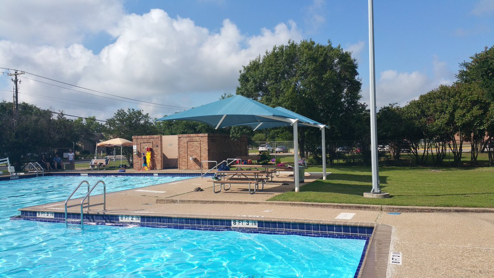

Status: Open
Weekdays: 8 am - 8 pm
Weekends: 8 am - 8pm
Weekday Closure: N/A
West Austin Pools

Deep Eddy Pool
401 Deep Eddy Ave, Austin, TX 78703Phone:(512) 472-8546
Oldest Hand-dug pool in the state with a separate pool just for lap swimming. The pool is spring fed so the water can be a bit chilly (65-72degrees year-round) and sometimes a bit cloudy. Lap pool length is a little over 25 meters and 5 lanes are always reserved for lap swimmers.

Reed Pool
2600 Pecos St., Austin, TX 78703Phone:(512) 477-1566
Small, neighborhood pool with one lane always roped off for lap swimmers. Shallow, 25 meters and reserved for lap swimmers on weekday mornings. Surrounding nature trails and great neighborhood for running and biking.
Status: Closed for Season
Weekdays: 8 am - 8 pm
Weekends: 11 am - 8pm
Weekday Closure: Tuesday


WestEnfield Pool
2000 Enfield Rd, Austin, TX 78703Phone: (512) 974-9331
WestEnfield is a recently renovated community pool with a lap pool and a separate, shallow acticity pool for children and wading. Lap pool is 25 yards with at least two lap lanes reserved at all times for lap swimmers.
Status: Closed for Season
Weekdays: 8 am - 8 pm
Weekends: 11 am - 8pm
Weekday Closure: Wedesday

Murchison Pool
3700 North Hills Drive in Austin, TX 78731Phone:(512) 974-9331
25 yard pool next to Murchison Middle School. Great for triathlon training as it is next to the Murchison Middle School track with plenty of bike routes and running trails in the surrounding neighborhood. Check pool hours for reserved lap swimming hours and to avoid summer swim league practice times.
Status: Closed for Season
Weekdays: 8 am - 8 pm
Weekends: 11 am - 8pm
Weekday Closure: Monday